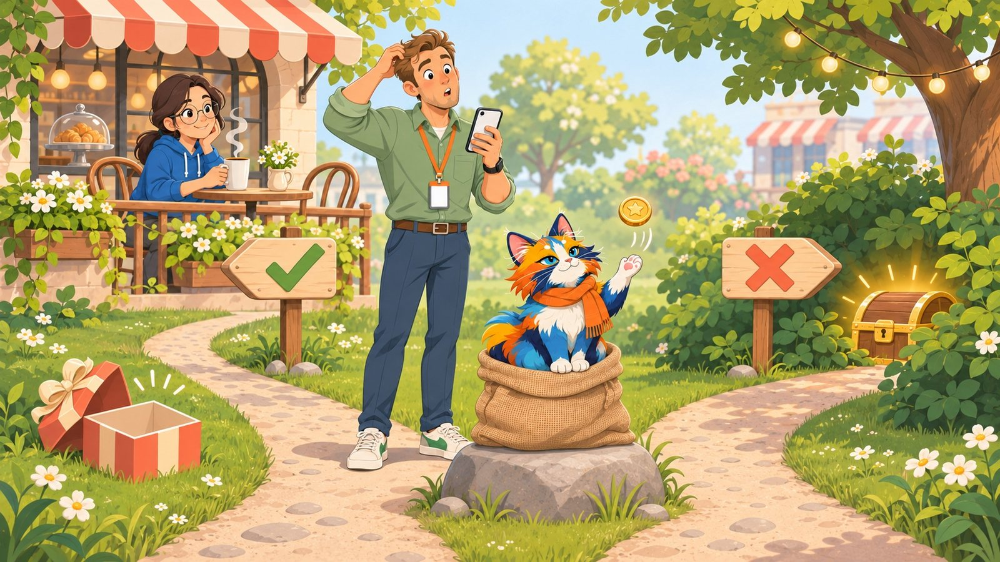
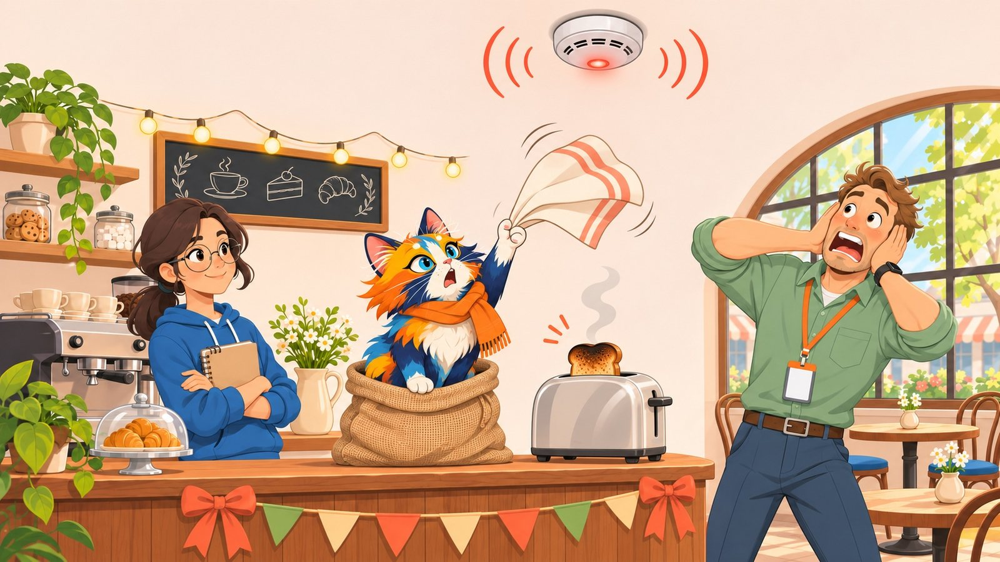

Сначала вспомним
За неделю теста 500 гостей группы B сделали 4000 заказов. Монетка бросалась за гостя. Сколько здесь независимых наблюдений?
Монетка решала за гостя, поэтому одно наблюдение — гость со всеми его заказами. Его 8 заказов не 8 независимых бросков: они похожи друг на друга. Это было в шаге 4.
В отчёте: из 1000 гостей заказали 101.2 вместо 100 (+1.2%), вилка от −0.5 до +2.9%. Как честно написать?
Результат — это вилка. Она задевает ноль, значит, отличить эффект от шума не удалось. Но она широкая и допускает до +2.9%: пока не знаем. Это было в шаге 6.
Шаг 8 из 11
Два вида ошибок
После шага ты сможешь отличить ложное срабатывание от пропуска и спросить, хватит ли тесту мощности.

За год Боб выкатил десять «победителей». Сколько из них пустышки? И сколько хороших идей он выбросил, потому что тест их не заметил?
У нас есть правило: верим эффекту, если вилка не задевает ноль, то есть p‑value меньше 5%. Любое правило иногда ошибается. Посмотрим, как именно и как часто.
Ошибиться можно двумя способами, и они совсем разные:
Как пожарная сигнализация на кухне кафе

Чуткая сигнализация пищит от каждого подгоревшего тоста: это ложные срабатывания. Глухая молчит, даже когда правда горит: это пропуск. На собеседовании и в статьях их называют ошибками I и II рода. Сделать её одновременно и спокойной, и внимательной можно, только если поставить датчик получше.
В A/B‑тесте так же. Порог 5% отвечает за то, как часто сигнализация пищит зря. А чтобы реже пропускать настоящий пожар, нужен датчик получше: больше людей и дней в тесте или метрика, которая меньше шумит.
Сто экспериментов Боба
За год команда Боба проверила 100 идей, каждую — недельным тестом. Честно говоря, большинство идей ничего не меняют: пусть 80 из 100 пустые, а у 20 настоящий эффект: из 1000 гостей заказывают 103 вместо 100 (+3%). У Боба правило: если тест не показал значимой разницы, идею закрываем навсегда.
Как думаешь, сколько хороших идей из 20 Боб так закроет?
Выбери вариант.
Запускаем сто экспериментов
Каждая клетка — один эксперимент. В день в каждую группу приходит 10 000 человек, конверсия в контроле 10%. Зелёная клетка — тест показал значимую разницу, серая — нет. Какие идеи на самом деле пустые, пока не видно.
80 пустых идей — мои: в них ничего не меняется. А в 20 хороших я подмешиваю шум — и иногда он прячет настоящие +3%.
Теперь поменяй условие
Белая точка — у идеи на самом деле был эффект +3%.
Ложные срабатывания не зависят от трафика, пропуски зависят
Подвигай длину эксперимента. Красная линия — как часто тест показывает значимую разницу у пустой идеи. Зелёная — как часто он замечает настоящие +3%.
Дольше тест — реже пропуски, а ложных срабатываний при любой длине 5%
Обычно хотят мощность хотя бы 80%: за неделю наш тест этого не даёт, мощность около 46%, а за три недели даёт с запасом, около 90%.
Порог — это строгость судьи
Тест похож на суд. Пустая идея — невиновный, хорошая — виновный. Ложное срабатывание — осудить невиновного, пропуск — отпустить виновного. Порог 5% — это строгость судьи: насколько удивительной должна быть разница, чтобы вынести приговор «эффект есть».
Строже порог — меньше ложных срабатываний, но больше пропусков

Давай порог 20%, чтобы точно ничего хорошего не пропускать!

Подвинь ползунок и посмотри, сколько пустых идей мы тогда «осудим».
Что будет, если поднять порог с 5% до 20%?
Мягкий судья реже отпускает виновных, но чаще осуждает невиновных: при пороге 20% каждая пятая пустая идея выглядит «победой». Уменьшить оба вида ошибок сразу можно, только если колокола разойдутся: больше людей и дней в тесте или менее шумная метрика — шаг 9.
Идея из книги: Дэвид Шпигельхалтер, «Искусство статистики»
Строгость зависит от цены ошибки
Чтобы решить, кто разбил вазу, хватит честного слова и пары крошек на ковре. Чтобы осудить за убийство, нужны железные доказательства: ошибка слишком дорогая. С фичами так же: порог 5% — привычный, но не священный. Чем дороже ошибиться, тем строже порог и тем больше людей нужно в тесте.
Новый оттенок кнопки «Заказать». Поддержка ничего не стоит, откатить можно за минуту. Как строго проверять?
Если ложное срабатывание почти ничего не стоит, а пропуск хорошей идеи жалко, порог можно ослабить и решать быстрее. Важно договориться об этом до теста, а не после того, как увидели p = 0.08.
Переход на новую систему оплаты: дорого внедрять, сложно откатить, ошибка ударит по всем заказам. Как строго проверять?
Чем дороже ложное срабатывание, тем строже порог. Плата за строгость — больше людей и дней в тесте, чтобы не пропустить настоящий эффект.
Идея из книги: Саманта Клейнберг, «Почему»
Сколько «побед» настоящие
Команда Алисы перешла на длинные тесты: теперь тест замечает хорошую идею в 80% случаев, а пустая «побеждает» в 5%. Зато идеи она проверяет все подряд, без отбора: за год 1000 штук, и хорошая среди них лишь каждая двадцатая. Боб хочет выкатывать каждую победу без перепроверки.
Как думаешь, какая доля значимых «побед» окажется настоящей?
Выбери вариант.
1000 идей, раскрашенных по исходу теста
Тесты у команды уже чувствительные. Что теперь сильнее всего поднимет долю настоящих побед?
Подвигай ползунки: при 5% хороших идей даже мощность 95% даёт только половину настоящих побед, а при 20% хороших и мощности 80% настоящих уже 80%. Когда тесты чувствительные, слабое место — поток идей. Каждая ложная победа — это выкаченная пустая фича, которую потом поддерживают годами.
Идея из книги: Майкл Херцог, Майкл Фрэнсис, Аарон Кларк, «Статистика и планирование эксперимента для непосвящённых»
Какая это ошибка?
Новый экран оплаты дал в тесте +2.5%, p = 0.03. Выкатили на всех, а через полгода повторили тест: ноль. Какое объяснение первой «победы» самое простое?
Самое простое объяснение — ложное срабатывание: если экран ничего не делает, тест примерно в одном случае из двадцати всё равно покажет значимую разницу, и при повторе она пропадёт. Но это не единственное объяснение: эффект мог и выдохнуться, об этом шаг 10. Насколько вероятна ложная «победа», зависит от доли хороших идей: при 10% хороших настоящих побед около половины, как в игре выше.
Тест рекомендаций шёл два дня, разница незначима.
Рекомендации бесполезны, удаляем.
Чем он рискует?
При наших 10 000 гостей в день на группу двухдневный тест заметит настоящие +3% примерно в 2 случаях из 10, а в 8 из 10 пропустит. «Не увидели» не равно «нет».
Как уменьшить долю пропусков, не увеличивая ложные срабатывания?
Больше людей — уже колокол, и настоящий эффект легче отличить от шума. Тот же выигрыш даёт метрика, которая меньше шумит, об этом шаг 9. Поднять порог тоже уменьшит пропуски, но ложных срабатываний станет вчетверо больше.
Сигнализация ошибается двумя способами
- Ложное срабатывание: фича пустая, а тест показал эффект. При пороге 5% так бывает примерно с одной пустой идеей из двадцати, сколько бы людей ни было.
- Пропуск: эффект есть, а тест его не заметил. Чем меньше людей и дней, тем чаще.
- «Не увидели» не значит «нет»: короткий тест пропускает даже хорошие идеи.
- Порог — строгость судьи. Строже — меньше ложных срабатываний, но больше пропусков. Уменьшить оба сразу помогают только люди, дни или менее шумная метрика, об этом шаг 9.
- Если идей много, а хороших мало, часть «победителей» обычно оказывается пустышками: при 10% хороших идей и мощности 50% из 95 побед настоящих только 50.
- Мощность — в скольких тестах из 100 настоящий эффект окажется значимым. Обычно хотят хотя бы 80.
Теперь у того, что мы сделали руками, есть названия:
- Ошибка I рода
- ложное срабатывание: увидели эффект, которого нет
- Ошибка II рода
- пропуск: не увидели эффект, который есть
- Мощность
- шанс заметить эффект заданного размера, если он правда есть